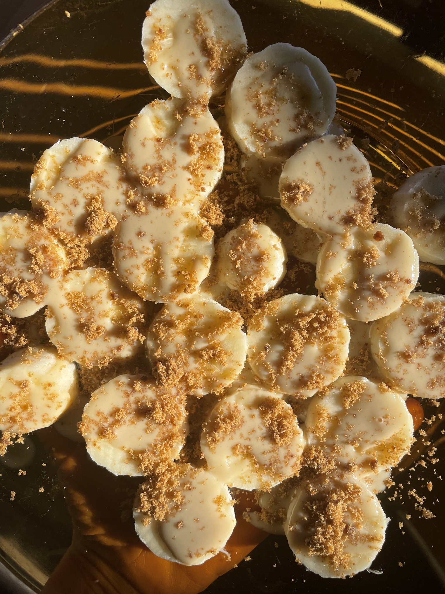
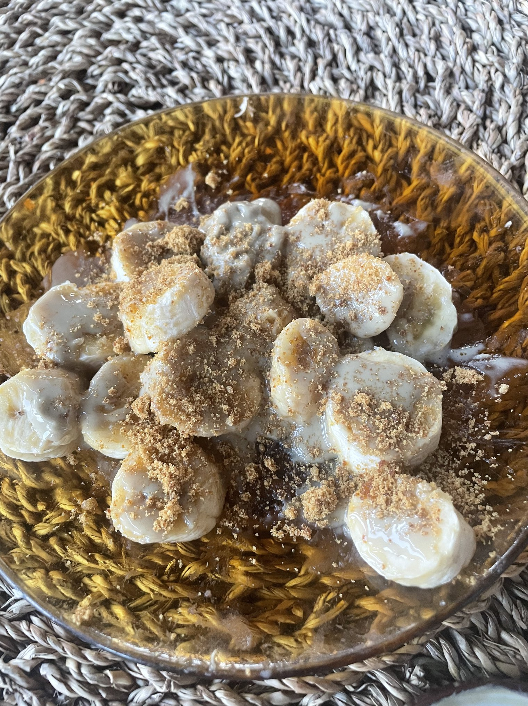

Postre árabe de plátano
Ingredientes
×
- 1 plátano
- tahini
- azúcar moreno o panela

Preparación
Paso 1
Trocear 1 plátano en rodajas.
Paso 2
Echar por encima tahini y azúcar moreno o panela (al gusto).
Consejos
De mis recuerdos en Francia.
Resumen
1 plátano
tahini
azúcar moreno o panela
Trocear
